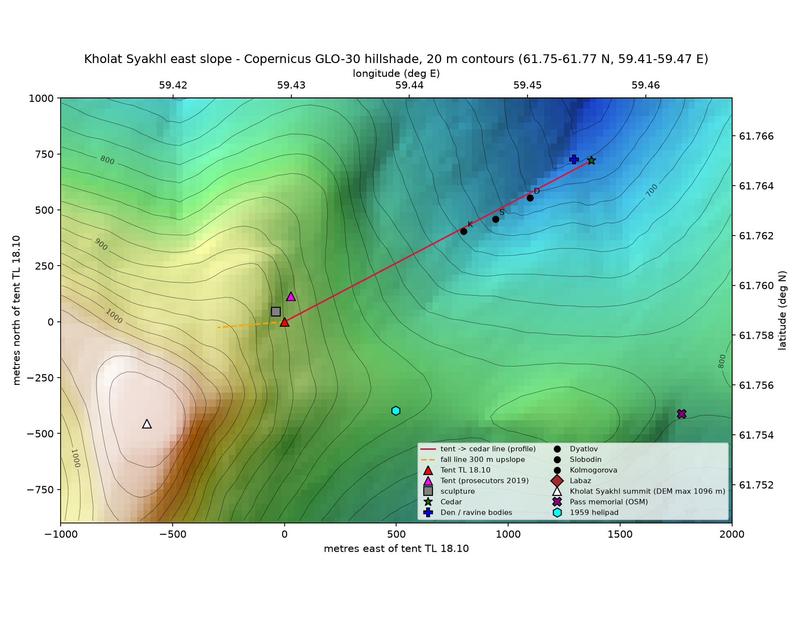
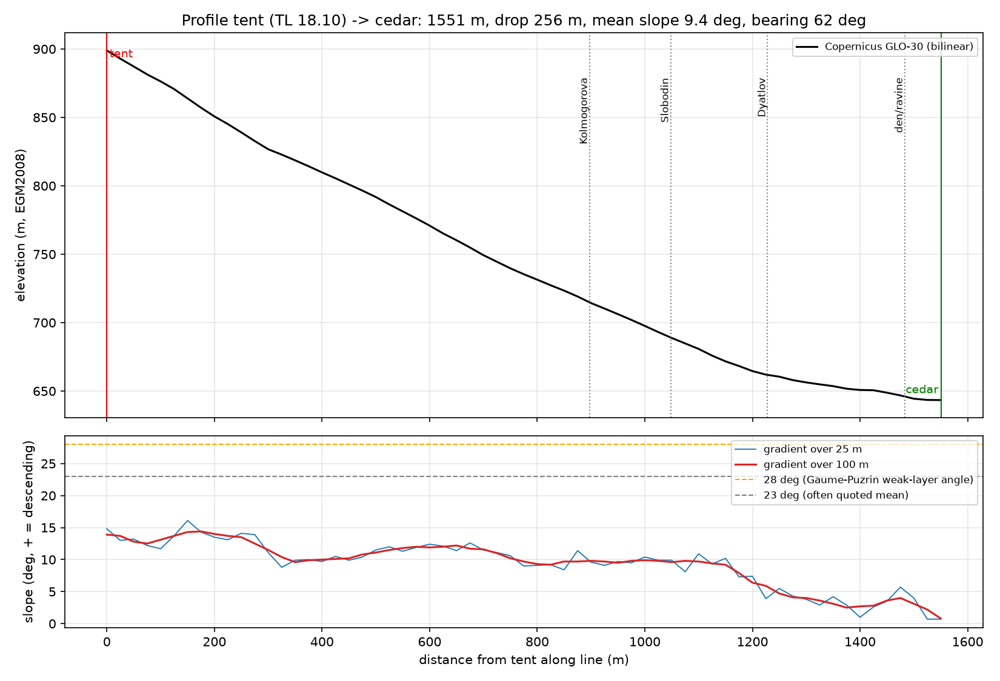

Northern Urals · the 1959 criminal case, volume 1, 392 sheets
Dyatlov Pass
What made nine experienced skiers cut their way out of their tent on the night of 1 to 2 February 1959 and walk into the dark without boots or coats, and how did three of them come by crushing injuries with no mark on the skin?
What happened. In late January 1959 nine ski hikers, eight students or recent graduates of the Ural Polytechnic Institute in Sverdlovsk (now Yekaterinburg) led by 23-year-old Igor Dyatlov, and a 37-year-old ski instructor, Semyon Zolotaryov, set out across the northern Urals. On 1 February they pitched their tent on the open east slope of Kholat Syakhl, a treeless mountain above the pass that now carries Dyatlov's name, about 150 m below the crest and 1.5 km above the forest, on a platform they had cut into the snow; that night all nine cut their way out through the tent wall and walked downhill without boots or coats in the dark, with the air falling toward minus 25 °C. Searchers found the tent on 26 February with everything inside; five bodies, dead of cold, between the tent and a cedar at the forest edge over the following week; and the last four in May, in a ravine stream bed under metres of snow, three of them with crushed chests or a crushed skull and no wound on the skin. The investigator who ran the case, Lev Ivanov of the regional prosecutor's office, closed it on 28 May 1959 with the finding that they had died of «стихийная сила», an elemental force; the closing resolution does not say what the force was.
Why it is a mystery. Nothing in the 1959 case file explains why nine experienced people left their only shelter at once, or how three of them were crushed 1.5 km from the tent with injuries that Boris Vozrozhdenny, the forensic examiner who performed the nine autopsies, said needed a great force of the kind seen when a person is thrown by a car. The record cannot settle it: the chemical analyses that the autopsy acts, the examiner's written reports on each body, refer to are not in the file, and of the nine bodies only one, Zolotaryov's, has been examined since 1959, privately, in 2018. The explanations fall into five camps, the first of them snow, a small avalanche or a collapse of snow onto the tent: this is the view of the Sverdlovsk regional prosecutors, who checked the case again in 2019 to 2020, of the snow scientist Johan Gaume and the geotechnical engineer Alexander Puzrin, whose 2021 paper gave it a physical model, and of the engineer Evgeny Buyanov (2011), who holds the avalanche view but puts the crushing injuries at the tent; it is opposed by people who have examined the slope and its snow in winter, the aviation engineer Vladimir Borzenkov and the 1959 searchers Vladislav Karelin and Sergey Sogrin, who say the slope is too gentle, the snow too well bonded and the tent too undisturbed for any avalanche. The other four are wind (a katabatic wind, a violent fall wind off the mountain: the Swedish archaeologist Richard Holmgren, 2019); infrasound (panic from low-frequency sound: the American writer Donnie Eichar, 2013); people (hunters of the Mansi, the indigenous people of that part of the Urals, criminals, or a KGB operation, the last from the pseudonymous Russian author Alexei Rakitin, 2013); and weapons (a rocket, a secret weapon or a toxic release, fed by reports of fireballs, glowing spheres seen over the Urals that February, and by radioactive traces on the clothing).
How it was judged. The 1959 case file, volume 1, 392 numbered pages, each called a sheet, holding the search records, the interrogations, the search party's radio messages and the nine autopsy acts, was read in Russian and 459 facts were extracted with their sheet numbers; the slope, the darkness and the cold of that night were computed from public elevation, astronomical and weather data; the Gaume and Puzrin model was reimplemented from its published equations; and the 2018 examination of Zolotaryov's exhumed bones was added. Then 28 of the facts were scored against nine explanations, with the sheet that contradicts each named, and the reimplemented model showed that its release delay is fitted to the forensic clock, the paper's estimate of the time of death from the watches and the hours since the last meal, rather than predicted, and that its injury physics cannot tell the tent from the ravine, so a small slab avalanche, a plate of wind-packed snow sliding off a steeper step in the slope above the tent, is ranked the leading candidate for the trigger, at 45 per cent, without being established. What tipped the balance toward a natural cause is the file itself: the tent was cut open from inside, the tracks show people walking downhill at a normal pace with no track of any other person near them, no document, injury or object points to a weapon, an explosion or a poison, and Vozrozhdenny said that Nikolay Thibeaux-Brignolle, whose skull was crushed, could only have been carried and that Lyudmila Dubinina, whose chest was crushed, lived ten to twenty minutes, which rules out a 1.5 km walk with those injuries and is what places them, most probably, in the ravine. The verdict is cold for six and crushing under snow for three, natural causes at about 90 in 100; snow on the tent as the trigger and the ravine as the place of the injuries are the most probable answers, and neither is established; a snow profile (a pit dug to read the snow layers) up the step above the tent, the missing chemical sheets, or an exhumation of the other two crushed bodies could move the figures.
Verdict
Cold killed six of the nine; a mass of snow, most probably in the ravine, crushed the other three. Natural causes at about 90 per cent: no other people, no weapon, no explosion, no vehicle and no poison is recorded on or around the bodies.
The evidence for natural causes is strong on the file as read; the trigger mechanism has a leading candidate rather than an answer, the slab at 45 per cent, with its snow requirement, a buried weak layer (a fragile layer of snow crystals on which a slab can slide) on the step above the tent, unmeasured; the place of the injuries is probable rather than demonstrated, resting on the 1959 examiner's statements about mobility and survival. Every figure is a judgement conditional on the nine explanations scored and the weight given to each of the 28 facts; none is a frequency.
The uphill half of the tent came down on them under snow, in the dark, most probably a small slab avalanche released from the stepped slope above the platform they had cut, less probably drifted snow collapsing the roof. They went downhill for the forest expecting more to follow and could not find their way back. Lev Ivanov's resolution of 28 May 1959, an elemental force, stands; what is added, as the most probable answers rather than as established facts, is the force (snow) and the place of the crushing injuries (the ravine). The sensitivity ranges show what re-weighting the 28 facts does to the figures; re-weighting moves them about this far: natural causes 80 to 95, on the weight given to the missing chemical sheets; the snow trigger 50 to 80 and the slab 20 to 65, on the unmeasured snow above the 1959 position and the fitted delay; the ravine 60 to 85, on the examiner's survival-time statements against the claim by Eduard Tumanov, a Moscow forensic expert who reviewed the 2018 exhumation, that the rib fractures run on "different lines". The remaining 10 in 100 covers what cannot be checked from the file: the chemical and histological analyses referred to in the 1959 autopsy acts are missing from the file, and only one body (Zolotaryov, 2018) has been examined since 1959.
The Gaume and Puzrin slab model is internally sound, reproduced to the published precision, and physically possible on this slope. Its terrain requirement, a step steeper than 28 degrees above the tent, is met on the authors' drone survey of September 2021, which mapped the ground at 9 cm resolution and shows 4 to 6 m steps over 28 to 30 degrees above the candidate tent positions. Its snow requirement, a buried weak layer on that step in February 1959, is unmeasured (pits in 2010, 2014, 2015 and 2019 found none); its release delay is fitted to the forensic clock rather than predicted; and its injury calculation cannot tell the tent from the ravine. The 75 per cent for the ravine rests on the 1959 examiner's statements about mobility and survival time (sheets 381 to 383) and on the 2019 reading of Zolotaryov's bones by Sergey Nikitin, the forensic expert who examined them after their exhumation in 2018; the slab argument does not decide it either way: the positive case for a slab does not by itself place the injuries at the tent, and the objections to the slab do not by themselves place them in the ravine.
The strongest opponents are people who have stood on the slope in winter. Borzenkov measured the snow surface at 16 to 17 degrees, found hard crust and no weak layer in four winters of pits, and argues that a slab would have left debris; Sogrin, at the site on 4 March 1959, said there was neither an avalanche nor a snow collapse. The answer: 16 to 17 degrees is the winter snow surface and says nothing about the ground steps beneath it; recent pits cannot show the snowpack of 1959; a 12 to 20 m³ slab stopping on the flat platform leaves 0.3 to 0.5 m of debris for the wind to rework, and Puzrin and Gaume watched a small slab trace vanish in under an hour in January 2022. The missing debris is still the strongest surviving point against every slab version: the reworking by wind that would account for it has not been confirmed. Thibeaux-Brignolle's depressed skull fracture needs 2.5 to 10 kN (kilonewtons; one kilonewton is roughly the weight of 100 kg), which over the 9 by 7 cm depression is a crushing pressure of about 400 kPa (kilopascals; the atmosphere presses at about 100), and 2.4 MPa over the bone piece alone; the 100 kPa yield pressure Gaume and Puzrin give their wind slab supplies 0.6 kN, and laboratory snow at the site densities runs roughly 300 to 950 kPa in Malcolm Mellor's review of snow mechanics (Mellor 1975). A soft or medium slab acting alone is excluded as the source of that load; a hard, well-sintered slab (one whose grains have bonded together) or a crust, pressing on a head that rested against something firm, or a hard object between snow and bone, is not. That constrains what pressed on the skull without excluding snow, and it neither distinguishes the tent from the ravine nor changes any of the percentages.
Separate claims, none of them shares of one total; each is a judgement conditional on the nine explanations scored and the weights on the 28 facts, with its sensitivity range in brackets. Of the 65 per cent for snow on the tent, 45 points go to a small slab avalanche and 20 to drifted snow collapsing the roof; the remaining 35 per cent of the trigger splits between wind alone, 15, and something not in the record, 20. What would move them most: a snow profile up the step above the 1959 tent position, the missing chemical sheets, and an exhumation of Dubinina and Thibeaux-Brignolle.
What was done
The 1959 case file, volume 1, 392 numbered pages called sheets, holding the search records, the interrogations, the radio messages and the nine autopsy acts, was read in Russian, and 459 facts were extracted with sheet numbers. To it were added the 2021 paper on a small slab avalanche by the snow scientist Johan Gaume and the geotechnical engineer Alexander Puzrin, with the comments its reviewers made for the journal (its peer-review file); the 2018 examination of the exhumed bones of Semyon Zolotaryov, one of the nine; and public elevation, astronomical and weather data. Volume 2, the unpublished 2020 expert reports and the original 1959 negatives were not read, and the code behind Gaume and Puzrin's model could not be obtained.
The slope at the tent, the darkness of the night and the cold were computed from public data: the Copernicus GLO-30 elevation model, a 30 m grid of ground heights, astronomical data, and three weather stations 100 to 200 km away. The Gaume and Puzrin model, in which a plate of wind-packed snow slides off a buried weak layer on a steeper step above the tent, was reimplemented from its published equations and tested for sensitivity to its inputs. A spring-and-damper model of the chest tested what load breaks ribs without a wound. Then 28 documented facts were scored against nine explanations, naming the sheet that contradicts each.
Figure 1 shows the east slope of Kholat Syakhl, with the tent, the cedar at the forest edge, the ravine and the three bodies on the slope between. Figure 2 follows the ground from the tent to the cedar: nothing on the descent exceeds 16 degrees at this resolution, but a 30 m grid cannot see the 4 to 6 m steps over 28 degrees that the authors' 2021 drone survey shows above the tent. Figure 3 maps the three ways the model can behave (a delayed release, a failure while the platform is being dug, or no release) against the slope of the buried weak layer and its friction angle, a measure of its resistance to sliding: the delayed release the paper relies on exists only in a narrow band, 24.7 to 29.7 degrees at the paper's parameters.
What tipped the balance toward a natural cause is the file itself: the tent was cut open from inside, the tracks show people walking downhill at a normal pace with no track of any other person near them, and no document, injury or object points to a weapon, an explosion or a poison. Boris Vozrozhdenny, the forensic examiner who performed the nine autopsies, said that Nikolay Thibeaux-Brignolle, whose skull was crushed, could only have been carried, and that Lyudmila Dubinina, whose chest was crushed, lived ten to twenty minutes, which rules out a 1.5 km walk with those injuries and places them, most probably, in the ravine.
The reimplemented model showed that its release delay is fitted to the forensic clock, the paper's estimate of the time of death, rather than predicted, and that its injury physics cannot tell the tent from the ravine; a small slab avalanche is the leading candidate for the trigger, at 45 per cent, without being established. The verdict is cold for six and crushing under snow for three, natural causes at about 90 per cent. Every figure is a judgement conditional on the nine explanations scored and the weights given to the 28 facts; a snow profile up the step above the tent or the missing chemical sheets could move it.



What is new here
- A from-scratch reimplementation of the Gaume and Puzrin release model with sensitivity and regime maps, charts of how its outcome changes as each input is varied. With the paper's own snow parameters, delayed release exists only where the weak layer lies between 24.7 and 29.7 degrees; the forensic window, the 9.5 to 13.5 hours the paper allows between the cut and the release, is met only at 26 to 28.5 degrees; cohesion, the bonding strength assumed for the weak layer, of 300, 440 and 450 Pa gives failure at the cut, the published delay and no release; and the time to release is proportional to a wind-deposition rate, the speed at which wind piles snow onto the slab, that nothing measured constrains. Dieter Issler, the avalanche scientist who reviewed the 2021 paper for the journal, called the agreement with the forensic delay "coincidental"; the regime map bears him out.
- Injury physics that makes the examiner's statements quantitative. Any 100 to 300 kg of hard snow at 1 to 2 m/s, or 3 to 4 m of static snow on a person against a firm base, gives the rib pattern without breaking skin, so the chest injuries cannot distinguish the tent from the ravine. For Thibeaux-Brignolle's 9 by 7 cm depressed temporal fracture, the 2.5 to 10 kN of the cadaver tests over the depression needs a crushing pressure of 400 kPa or more, which excludes a soft or medium slab as the sole loader but not a hard slab, nor a hard object under the snow.
- A 28-fact by 9-explanation matrix, a table with a cell for every pairing and the contradicting sheet named in every red cell, keeping the three slab versions (Gaume and Puzrin 2021, the prosecutors' check of 2019 to 2020, Buyanov 2011) separate because they place the injuries differently.
- The darkness and the clock from open data: the moon below the horizon from 11:27 on 1 February to 04:15 on 2 February; full night from 19:40; the tent site in mountain shadow from 14:40; walking time to the cedar 35 to 85 minutes; the readings at Burmantovo, the nearest weather post, in the Lozva valley below the mountains, falling from −8 to −21 °C between 15:00 and 03:00.
- The fireballs closed against the General Catalog of Artificial Space Objects (GCAT), the astronomer Jonathan McDowell's launch list: the sighting of 17 February at 06:46 local time is the launch of an R-7, the Soviet intercontinental missile that had launched Sputnik, at 01:46 UTC, five hours behind local time; the sighting of 31 March at 03:53 local time is the R-7 failure of 30 March at 22:53 UTC; and nothing capable of reaching the northern Urals was launched on 1 or 2 February.
- A catalogue of 41 places where the standard English transcription of the autopsy acts and interrogations, the version most English-language discussion relies on, differs from the Russian on load-bearing points, among them the "bomb" in Vozrozhdenny's testimony, which in Russian is «воздушной взрывной волне», an air blast wave, with no bomb; "first hour" for «первые часы», the first hours; and knuckle abrasions rendered as the wrist. With it, 16 internal contradictions, 16 gaps, and 17 further translation differences in the scene and search documents.
- The legal status of the 2020 conclusions of the prosecutors' check: disowned by the Prosecutor General on 10 August 2020, never published, never ruled on by any court, with the 28 May 1959 resolution still the only decision with legal force and the relatives' demand of 2 June 2026 for a new criminal case unanswered at the date of the report.
- A bound on the average slope from a public 30 m digital elevation model, a grid of ground heights at 30 m spacing: 15 to 16 degrees at the cairn-marked tent position, the site three independent Russian researchers agree on, and no candidate above 19.5 degrees. It does not support the 2021 paper's 23 ± 2 degree average, but it says nothing about the 4 to 6 m steps the model rests on, which the authors' 9 cm drone survey shows.
Already established by others. Ivanov's 1959 resolution that a natural force killed the group, and Vozrozhdenny's statements on mechanism and survival, are the basis of the finding. Sogrin's 15 to 18 degrees and Borzenkov's 16 to 17 for the average slope are what the elevation model gives. The location of the injuries in the ravine is the finding of Andrei Kuryakov, the department head in the Sverdlovsk regional prosecutor's office who ran the check of 2019 to 2020, and of Nikitin, whose 2019 placement of them there is taken as expert opinion in line with the 1959 examiner rather than as new measurement. The 17 February R-7 identification is Buyanov's, made with the space historian Aleksandr Zheleznyakov in 2007. The observation that small slabs on these slopes vanish within an hour, and the finding that steps steeper than 28 degrees run above every candidate tent position, are Puzrin and Gaume's own field results, reported in their 2022 Comment, a follow-up article on the 2021 paper, and not independently checked. Issler's point about the fitted delay was made in peer review in 2020.
Where this verdict stands among historians
What historians have said. The 1959 investigation closed with "an elemental force the people were unable to overcome" (Ivanov, 28 May 1959). The prosecutors' check of 2019 to 2020 named a small slab plus hypothermia, death by cold, with the ravine injuries from a collapse of the undercut snow bank; on 10 August 2020 the Prosecutor General disowned the press conference that had announced these conclusions, and they were never published or tested in court. Gaume and Puzrin (2021, 2022) supplied a physical mechanism, a delayed wind-slab release on a buried weak layer at a 28 degree step, and field evidence that such steps and such slabs exist nearby. Buyanov (2011) puts the crushing injuries at the tent; Holmgren (2019) argues a katabatic wind, Eichar (2013) infrasound, and Rakitin (2013) a KGB operation.
The finding agrees with the 1959 verdict of a natural cause and with the prosecutors' 2020 placement of the injuries in the ravine, and it agrees with Gaume and Puzrin that the slab mechanism is possible on this slope, treating it as the leading single trigger candidate at 45 per cent. It reads the model's two quantitative selling points differently: the delay is fitted rather than predicted, and the injury physics is indifferent to location. It rejects Buyanov's injuries-at-the-tent version on the examiner's mobility statements, which argue against the tent without establishing the ravine, and closes the fireball, Mansi, KGB, infrasound and katabatic-wind-as-hurricane theories on cited sheets; wind alone survives as a trigger at about 15 per cent. Nothing here overturns a position held by a specialist.
What would overturn it
- A snow profile up the step above the 1959 tent position: a buried weak layer under a wind slab would take the slab to about 65 per cent and the snow trigger to about 80; repeated hard, well-bonded snow to the ground would push the slab toward 20.
- The 1959 tent position from the prosecutors' 2019 photogrammetry, which fixed the site by comparing 1959 and 2019 photographs, overlaid on the 2021 drone model, naming the step above the cut and its angle and length.
- The missing 1959 chemical and histological (tissue) sheets: a toxin would cut the natural-cause figure sharply.
- A full exhumation with modern imaging: broad compression fractures would confirm the ravine; localised blows or a weapon would overturn the finding outright.
- A range or telemetry record of any launch over 61.8° N 59.4° E, the position of the site, on 1 or 2 February 1959; the published lists contain none.
- The hourly 1959 synoptic record, the weather-station log, for Burmantovo, Ivdel and Nyaksimvol, the nearest stations; a recorded fall-wind event would raise the wind-only trigger.
- The written conclusions and nine expert reports of the prosecutors' check of 2019 to 2020, held in the Sverdlovsk state archive with restricted access.
- The original 26 to 28 February 1959 negatives of the tent and the slope above it, for a crown line or debris lobe, the marks a slab leaves where it breaks away and where it stops.
- A dynamic model of the ravine bank collapse: if the collapse cannot deliver the load, the injuries go back to the tent and to Buyanov's version.
Limits
- No field measurement of the snow at the site: every snow observation is other people's (1959, 2010 to 2019, 2021 to 2023) and none is a pit line up the step above the fixed 1959 tent position.
- The ravine collapse, the least secure step of the reconstruction, is treated by static and quasi-static calculation only, which take the snow as a resting load; nobody has run a dynamic model of it, one that follows the collapse in motion.
- Only volume 1 of the case file and the published radiograms, the search party's radio messages, were read; volume 2, the unpublished 2020 expert reports and the original 1959 negatives were not. The model paper's code and the cadaver-test primaries, the original publications of those tests, could not be obtained; the reproduction used the published equations and the peer-review file.
- The weather for the night is reconstructed from three daily stations 100 to 200 km away, the notes of the Burmantovo readings kept by Yevgeny Maslennikov, the experienced hiker who led the search on the ground, and the 2020 microclimate expertise, the weather reconstruction commissioned by the prosecutors, as reported; no hourly 1959 record for the site was obtained.
- Tumanov's claim that the rib fractures run on different lines was not checked against the autopsy drawings.
- The hour of leaving the tent is inferred within a 2.5-hour window from a digestion estimate, the hours since the last meal, written identically for five bodies.